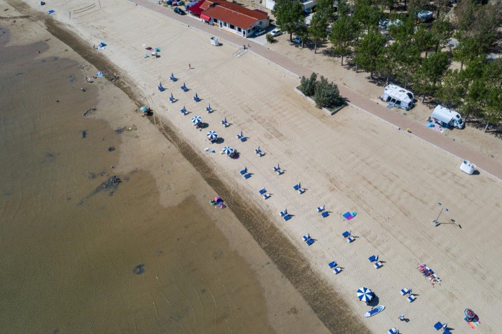
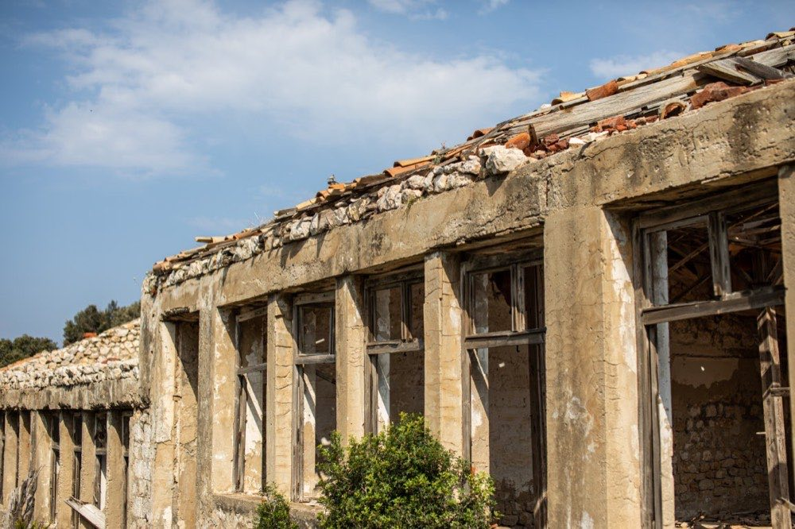
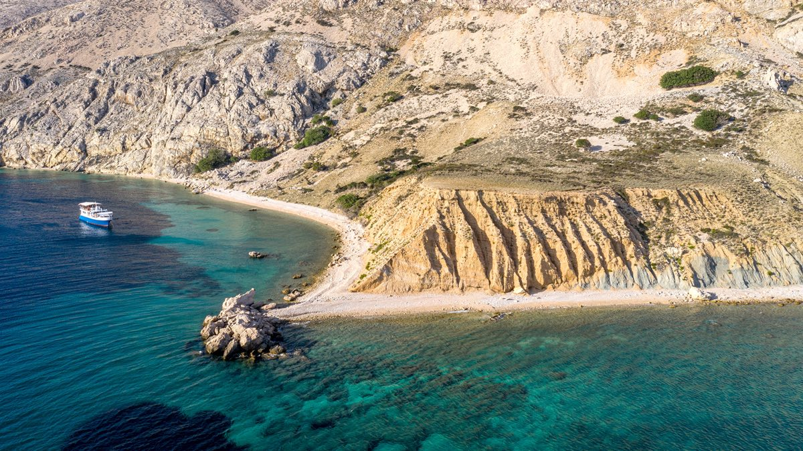
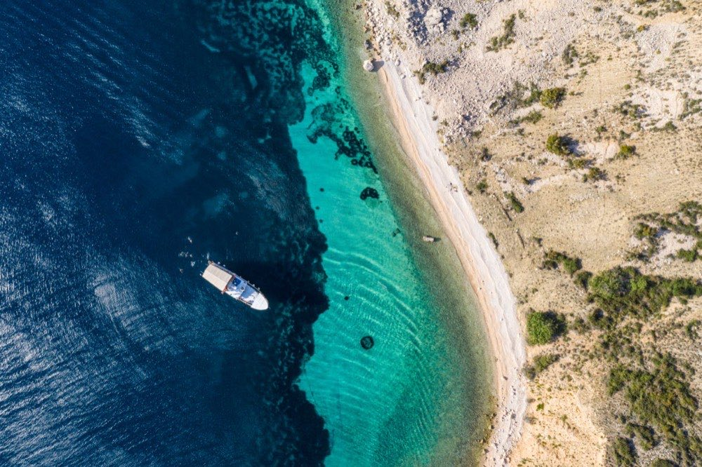
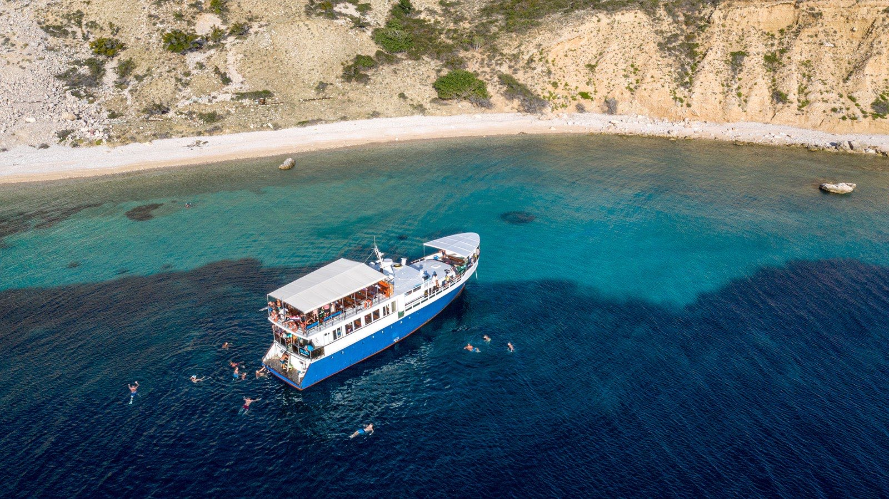
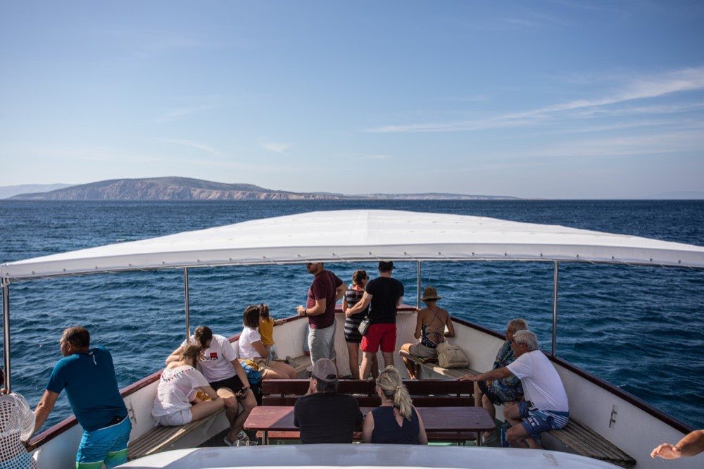
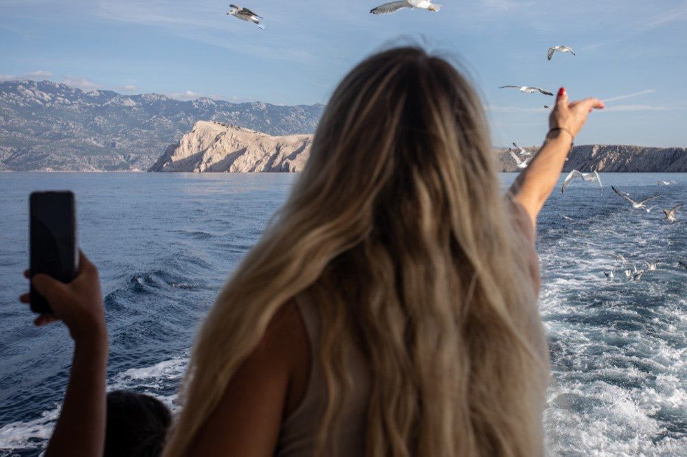
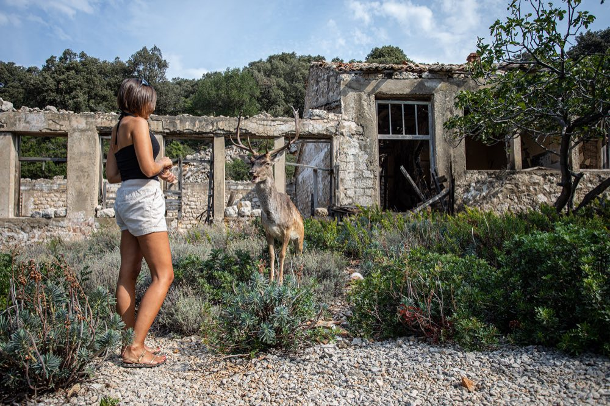
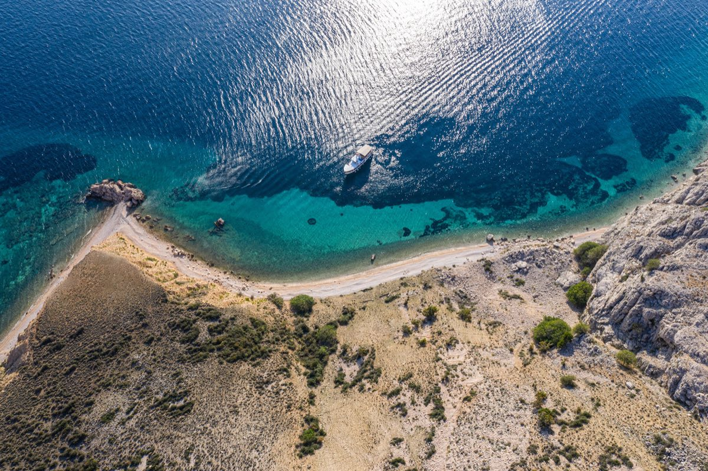
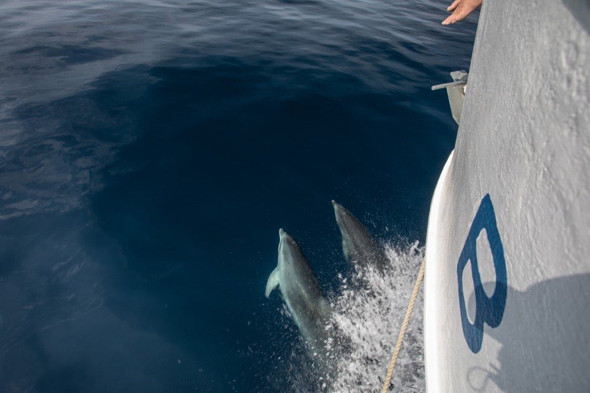

Četiri otoka, jedan dan na moru.
Krenite od obale i otplovite s nama na izlet koji ćete pamtiti cijeli život. Brodom Bura iz Baške na Grgur, Rab (Lopar), Goli otok i Prvić – s ručkom na brodu i kupanjem u kristalno čistom moru.

Najzanimljiviji otoci oko Baške.
 1Zaustavljanje: 1 sat
1Zaustavljanje: 1 satOtok Grgur
Ostaci ženskog zatvora iz vremena Jugoslavije, pitomi jeleni koje možete hraniti, šljunčana plaža i restoran u blizini.

2Zaustavljanje: 2 sataRab · Lopar
Pješčana plaža San Marino, jedna od najljepših na Jadranu. More je plitko i toplo – klinci će biti oduševljeni.

3Zaustavljanje: 1 satGoli otok
„Hrvatski Alcatraz”: ostaci muškog zatvora koje razgledate pješice ili vlakićem (dodatno se plaća). U blizini je mala plaža.

4Zaustavljanje: 45 minutaOtok Prvić
Sidrimo ispred plaže Njivice. Ovdje je vrhunac dana: skakanje s broda, ronjenje na dah i plivanje u bistrom moru.


Cijeli dan na moru, ručak sprema posada.
U cijenu izleta uključeno je:
- Piće dobrodošlice i aperitiv
- Ručak na brodu – riblji ili mesni meni
- Pića tijekom ručka
- Voćni desert

„Jedinstveno iskustvo je kupanje i skakanje s broda na jednoj od najljepših plaža na otoku Prviću!”
Zadnje zaustavljanje dana: brod sidri ispred plaže Njivice na Prviću, a vi skačete ravno u more.
Djelić onoga što ćete doživjeti na brodu.







Prije nego što zaplovimo.
Kada i odakle polazi izlet?
Izlet počinje u 10 sati s rive u Baški, a povratak na isto mjesto je u 18 sati.
Koje otoke posjećujemo?
Četiri otoka u jednom danu: Grgur, Rab (mjesto Lopar), Goli otok i Prvić. Na početku je i panoramska vožnja uz Prvić, najveći nenaseljeni otok na Jadranu.
Što je uključeno u izlet?
Piće dobrodošlice, aperitiv, ručak na brodu (riblji ili mesni meni), pića tijekom ručka i voćni desert.
Mogu li birati ručak?
Da. Ručak priprema posada broda, a birate između ribljeg i mesnog menija.
Gdje se kupamo?
Na šljunčanoj plaži na Grguru, na pješčanoj plaži San Marino u Loparu (plitko i toplo more) te ispred plaže Njivice na Prviću, gdje brod sidri pa se može skakati s broda, roniti na dah i plivati.
Je li vlakić na Golom otoku uključen?
Nije. Ostatke zatvora na Golom otoku možete razgledati pješice ili vlakićem, koji se dodatno plaća.
Kako rezervirati?
Nazovite 091 534 4514 ili 091 539 0755, pišite na bura-excursion@hi.ht.hr ili pošaljite upit preko obrasca na ovoj stranici.
Rezervirajte izlet za sebe i svoju obitelj.
Nazovite, pišite nam ili ispunite obrazac. Polazak je u 10:00 s rive u Baški, povratak u 18:00.